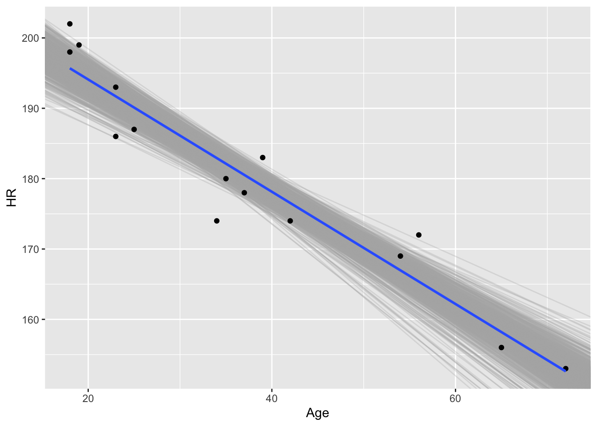

Tuesday, September 6, 2022
Today
- Getting data into R
- Data frames
- Piping your commands
More information about how to use RStudio and markdown files is available here: https://www.pipinghotdata.com/posts/2020-09-07-introducing-the-rstudio-ide-and-r-markdown/
Ten simple rules for teaching yourself R https://journals.plos.org/ploscompbiol/article?id=10.1371/journal.pcbi.1010372#sec007
Getting data into R
In order to get data from outside into R you need to know two things: (1) where the data are located, and (2) what type of data file is it.
Consider the file US.txt located in your project folder (in the data directory). Click on the file name. It opens a file tab displaying the contents.
The file contains columns with names Year, All, MUS, G, FL, E. Each row is a year and the count is the number of hurricanes making landfall in the United States. All indicates anywhere in the continental U.S, MUS indicates at major hurricane intensity (at least 33 m/s). Each column is separated by a space.
To create a data object in R from this external file you use the readr::read_table() function. The required argument is file =.
The here::here() function from the {here} package specifies the file relative to your project root. Within the here::here() function you put the name of the directory and the name of the file in quotes.
LH.df <- readr::read_table(file = here::here("data", "US.txt"))##
## ── Column specification ────────────────────────────────────────────────────────
## cols(
## Year = col_double(),
## All = col_double(),
## MUS = col_double(),
## G = col_double(),
## FL = col_double(),
## E = col_double()
## )A data object called LH.df is now in your Environment under Data.
In this case the file name is simple because US.txt is in the same directory as your Rmd file.
If you get an error message it is likely because the data file is not where you think it is.
If there are missing values in the data file they should be coded as NA. If they are coded as something else then you specify the coding with the na = argument. For example, if the missing value character in our file is coded as 99, you specify na = "99".
The readr::read_csv() has settings that are suitable for comma delimited (csv) files that have been exported from a spreadsheet.
So a typical work flow might include exporting data from a spreadsheet using the csv file format then importing it to R using the readr::read_csv() function.
You import data from the web by specifying the URL instead of the local file name.
In this file there are spaces instead of commas separating the columns like in a table, so you use the readr::read_table() function.
loc <- "http://myweb.fsu.edu/jelsner/temp/data/US.txt"
LH.df <- readr::read_table(file = loc)##
## ── Column specification ────────────────────────────────────────────────────────
## cols(
## Year = col_double(),
## All = col_double(),
## MUS = col_double(),
## G = col_double(),
## FL = col_double(),
## E = col_double()
## )Recall that you reference the columns using the $ syntax. For example, type
LH.df$FL## [1] 1 2 0 0 0 1 0 0 0 0 0 0 0 0 1 0 0 0 0 1 2 0 2 1 0 1 2 1 0 3 0 2 0 0 0 3 1
## [38] 2 0 0 0 0 1 2 0 3 1 1 1 0 1 0 1 0 0 2 0 0 1 1 1 0 0 0 1 2 1 0 1 0 1 0 0 2
## [75] 1 2 0 2 1 0 0 0 2 2 2 1 0 0 1 0 1 2 0 1 2 1 2 2 1 2 0 0 1 0 0 1 0 0 0 1 0
## [112] 0 0 3 1 2 1 1 0 0 0 1 0 0 1 0 0 0 1 0 0 0 0 0 2 0 1 0 1 0 0 1 0 0 2 0 0 2
## [149] 1 0 0 0 0 4 3 0 0 0 0 0 0 0 0 0 0 1sum(LH.df$FL)## [1] 110The number of years with 0, 1, 2, … Florida hurricanes is obtained by typing
table(LH.df$FL)##
## 0 1 2 3 4
## 93 43 24 5 1There are 93 years without a FL hurricane, 43 years with one hurricanes, 24 years with two hurricanes, and so on.
Some useful resources for getting data into R.
Creating structured data files and the golden rules of data entry https://environmentalcomputing.net/getting-started-with-r/
Converting unstructured data files (e.g., data stored in PDF forms) to structured data. https://www.youtube.com/watch?v=yBkHfIO8YJk
Data frames
The functions readr::read_table() and readr::read_csv() import data into our environment as a data frame. For example, LH.df is a data frame. You see the data object is a data frame in your Environment.
A data frame is like a spreadsheet. Values are arranged in rows and columns. Rows are the cases (observations) and columns are the variables.
The dim() function returns the size of the data frame in terms of how many rows (first number) and how many columns.
dim(LH.df)## [1] 166 6There are 166 rows and 6 columns in the data frame.
Note the use of inline code. Open with a single back tick (grave accent) followed by the letter r and close with a single back tick. Inline code allows content in your report to be dynamic. There is no need to retype values when the data changes. Open 05-Lesson.html in a browser.
To list the first six lines of the data object, type
head(LH.df)## # A tibble: 6 × 6
## Year All MUS G FL E
## <dbl> <dbl> <dbl> <dbl> <dbl> <dbl>
## 1 1851 1 1 0 1 0
## 2 1852 3 1 1 2 0
## 3 1853 0 0 0 0 0
## 4 1854 2 1 1 0 1
## 5 1855 1 1 1 0 0
## 6 1856 2 1 1 1 0The columns include year, number of hurricanes, number of major hurricanes, number of Gulf coast hurricanes, number of Florida hurricanes, and number of East coast hurricanes in order. Column names are printed as well.
The last six lines of the data frame are listed similarly using the tail() function. The number of lines listed is changed using the argument n =.
tail(LH.df,
n = 3)## # A tibble: 3 × 6
## Year All MUS G FL E
## <dbl> <dbl> <dbl> <dbl> <dbl> <dbl>
## 1 2014 1 0 0 0 1
## 2 2015 0 0 0 0 0
## 3 2016 2 0 0 1 1The number of years in the record is assigned to the object nY and the annual average number of hurricanes (rate) is assigned to the object rate.
nY <- length(LH.df$All)
rate <- mean(LH.df$All)By typing the names of the saved objects, the values are printed.
nY## [1] 166rate## [1] 1.668675Thus over the 166 years of data the average number of hurricanes per year is 1.67.
If you want to change the names of the columns in the data frame, type
names(LH.df)[4] <- "GC"
names(LH.df)## [1] "Year" "All" "MUS" "GC" "FL" "E"This changes the 4th column name from G to GC. Note that this change occurs to the data frame in R and not to your original data file.
You will work almost exclusively with data frames. A data frame has rows and columns.
- Columns have names
- Columns are vectors
- Columns must be of the same length
- Columns must be of the same data type
Each element is indexed by a row number and a column number in that order and separated by a comma. So if df is a data frame then df[2, 3] is the second row of the third column.
To print the second row of the first column of the data frame LH.df you type
LH.df[2, 1]## # A tibble: 1 × 1
## Year
## <dbl>
## 1 1852If you want all the values in a column, you leave the row number blank.
LH.df[ , 1]## # A tibble: 166 × 1
## Year
## <dbl>
## 1 1851
## 2 1852
## 3 1853
## 4 1854
## 5 1855
## 6 1856
## 7 1857
## 8 1858
## 9 1859
## 10 1860
## # … with 156 more rows
## # ℹ Use `print(n = ...)` to see more rowsYou can also reference the column by name LH.df$Year.
Data frames have two indexes indicating the rows and columns in that order.
LH.df[10, 4]## # A tibble: 1 × 1
## GC
## <dbl>
## 1 3To a statistician a data frame is a table of observations. Each row contains one observation. Each observation must contain the same variables. These variables are called columns, and you can refer to them by name. You can also refer to the contents of the data frame by row number and column number (like a matrix).
To an Excel user a data frame is a worksheet (or a range within a worksheet). A data frame is more restrictive in that each column can only be of one data type (e.g., character, numeric, etc).
As an example, consider monthly precipitation from the state of Florida. Source: Monthly climate series. http://www.esrl.noaa.gov/psd/data/timeseries/. Get monthly precipitation values for the state back to the year 1895. Copy/paste into a text editor (notepad) then import using the readr::read_table() function.
Here I did it for Florida and put the file on my website. Missing values are coded as -9.900 so you add the argument na = "-9.900" to the function.
loc <- "http://myweb.fsu.edu/jelsner/temp/data/FLprecip.txt"
FLp.df <- readr::read_table(loc,
na = "-9.900")##
## ── Column specification ────────────────────────────────────────────────────────
## cols(
## Year = col_double(),
## Jan = col_double(),
## Feb = col_double(),
## Mar = col_double(),
## Apr = col_double(),
## May = col_double(),
## Jun = col_double(),
## Jul = col_double(),
## Aug = col_double(),
## Sep = col_double(),
## Oct = col_double(),
## Nov = col_double(),
## Dec = col_double()
## )Plot a time series graph.
library(ggplot2)
ggplot(data = FLp.df,
mapping = aes(x = Year, y = Jan)) +
geom_line() +
ylab("Inches") +
ggtitle(label = "January Precipitation in Florida",
subtitle = "1895-2012")
A minimal, complete, reproducible example.
The median value cuts a set of ordered data values into two equal parts. Values larger than the median and values less than the median. The ordering comes from arranging the data from lowest to highest.
Quantiles cut a set of ordered data into arbitrary number of equal-sized parts. The quantile corresponding to cutting the data into two halves is called the median. Fifty percent of the data have values less than or equal to the median value. The median is the 50th percentile (.5 quantile).
Quantiles corresponding to cutting the ordered data into quarters are called quartiles. The lower (first) quartile cuts the data into the lower 25% and upper 75% of the data. The lower quartile is the .25 quantile or the 25th percentile indicating that 25% of the data have values less than this quantile value.
Correspondingly, the upper (third) quartile corresponding to the .75 quantile (75th percentile), indicates that 75% of the data have values less than this quantile value.
The quantile() function calculates quantiles on a vector of data. For example, consider Florida precipitation for the month of June. First apply the sort() function on the June values (column indicated by the label Jun).
sort(FLp.df$Jun)## [1] 2.303 2.445 3.292 3.643 3.673 3.898 3.908 4.089 4.202 4.401
## [11] 4.500 4.598 4.739 4.747 4.820 4.838 4.965 5.098 5.099 5.160
## [21] 5.182 5.221 5.321 5.349 5.362 5.422 5.440 5.531 5.588 5.602
## [31] 5.607 5.614 5.696 5.718 5.724 5.752 5.803 5.866 5.887 5.896
## [41] 5.931 5.971 5.998 6.142 6.147 6.171 6.220 6.258 6.269 6.281
## [51] 6.351 6.392 6.392 6.470 6.540 6.541 6.591 6.739 6.789 6.900
## [61] 6.991 6.998 7.002 7.009 7.012 7.049 7.057 7.098 7.118 7.208
## [71] 7.306 7.348 7.450 7.451 7.481 7.666 7.707 7.748 7.876 8.000
## [81] 8.040 8.158 8.168 8.243 8.317 8.378 8.389 8.432 8.488 8.578
## [91] 8.663 8.874 8.880 8.940 8.969 8.976 9.106 9.308 9.349 9.481
## [101] 9.734 9.865 9.939 9.993 10.032 10.276 10.280 10.288 10.309 10.360
## [111] 10.529 10.858 11.014 11.228 11.824 12.034 12.379Again, note the use of the dollar sign to indicate the column in the data frame.
To find the 50th percentile you use the median() function directly or the quantile() function and specify the quantile with the probs = argument.
median(FLp.df$Jun)## [1] 6.789quantile(FLp.df$Jun,
probs = .5)## 50%
## 6.789To retrieve the 25th and 75th percentile values
quantile(FLp.df$Jun,
probs = c(.25, .75))## 25% 75%
## 5.602 8.432Of the 117 monthly precipitation values, 25% of them are less than 5.6 inches, 50% are less than 6.79 inches.
Thus there are an equal number of years with June precipitation between 5.6 and 6.79 inches.
The difference between the first and third quartile values is called the interquartile range (IQR). Fifty percent of the data values lie within the IQR. The IQR is obtained using the IQR() function.
Another example: Consider the set of North Atlantic Oscillation (NAO) index values for the month of June from the period 1851–2010. The NAO is a variation in the climate over the North Atlantic Ocean featuring fluctuations in the difference of atmospheric pressure at sea level between the Iceland and the Azores.
The index is computed as the difference in standardized sea-level pressures. The standardization is done by subtracting the mean and dividing by the standard deviation. The index has units of standard deviation.
First read the data consisting of monthly NAO values, then list the column names and the first few data lines.
loc <- "http://myweb.fsu.edu/jelsner/temp/data/NAO.txt"
NAO.df <- readr::read_table(loc)##
## ── Column specification ────────────────────────────────────────────────────────
## cols(
## Year = col_double(),
## Jan = col_double(),
## Feb = col_double(),
## Mar = col_double(),
## Apr = col_double(),
## May = col_double(),
## Jun = col_double(),
## Jul = col_double(),
## Aug = col_double(),
## Sep = col_double(),
## Oct = col_double(),
## Nov = col_double(),
## Dec = col_double()
## )## Warning: 4 parsing failures.
## row col expected actual file
## 157 -- 13 columns 14 columns 'http://myweb.fsu.edu/jelsner/temp/data/NAO.txt'
## 158 -- 13 columns 14 columns 'http://myweb.fsu.edu/jelsner/temp/data/NAO.txt'
## 159 -- 13 columns 14 columns 'http://myweb.fsu.edu/jelsner/temp/data/NAO.txt'
## 160 -- 13 columns 14 columns 'http://myweb.fsu.edu/jelsner/temp/data/NAO.txt'head(NAO.df)## # A tibble: 6 × 13
## Year Jan Feb Mar Apr May Jun Jul Aug Sep Oct Nov Dec
## <dbl> <dbl> <dbl> <dbl> <dbl> <dbl> <dbl> <dbl> <dbl> <dbl> <dbl> <dbl> <dbl>
## 1 1851 3.29 1.03 1.5 -1.66 -1.53 -1.62 -5.39 4.68 1.85 0.78 -1.77 1.74
## 2 1852 1.46 0.41 -2.5 -1.6 0.25 0.09 -1.13 2.94 -2.02 -1.65 -0.93 1.03
## 3 1853 1.31 -4.04 -0.32 0.76 -3.17 1.09 1.76 -2.36 -0.22 -0.47 0.51 -4.28
## 4 1854 1.28 1.72 2.67 0.88 0.04 -0.06 -1.92 -0.03 2.62 1.11 -1.56 2.42
## 5 1855 -1.84 -3.8 -0.05 0.99 -2.28 0.78 -2.61 3.81 0.79 -1.09 -2.42 -1.66
## 6 1856 -1.25 -0.1 -2.27 2 -0.7 2.03 -0.16 -0.44 -0.5 1.12 -1.69 -0.23Determine the 5th and 95th percentile values for the month of June.
quantile(NAO.df$Jun,
prob = c(.05, .95))## 5% 95%
## -2.808 1.891The summary() function provides summary statistics for each column in your data frame. The statistics include output the mean, median, minimum, maximum, along with the first quartile and third quartile values.
summary(FLp.df)## Year Jan Feb Mar Apr
## Min. :1895 Min. :0.340 Min. :0.288 Min. :0.496 Min. :0.408
## 1st Qu.:1924 1st Qu.:1.798 1st Qu.:2.009 1st Qu.:2.142 1st Qu.:1.659
## Median :1953 Median :2.696 Median :3.099 Median :3.349 Median :2.677
## Mean :1953 Mean :2.916 Mean :3.164 Mean :3.663 Mean :2.926
## 3rd Qu.:1982 3rd Qu.:4.010 3rd Qu.:4.171 3rd Qu.:5.097 3rd Qu.:4.163
## Max. :2011 Max. :8.361 Max. :8.577 Max. :8.701 Max. :7.457
## May Jun Jul Aug
## Min. :0.900 Min. : 2.303 Min. : 4.050 Min. : 4.053
## 1st Qu.:2.483 1st Qu.: 5.602 1st Qu.: 6.427 1st Qu.: 6.164
## Median :3.758 Median : 6.789 Median : 7.522 Median : 7.102
## Mean :3.845 Mean : 7.046 Mean : 7.505 Mean : 7.345
## 3rd Qu.:4.765 3rd Qu.: 8.432 3rd Qu.: 8.358 3rd Qu.: 8.310
## Max. :9.848 Max. :12.379 Max. :11.263 Max. :13.090
## Sep Oct Nov Dec
## Min. : 2.126 Min. :0.471 Min. :0.370 Min. :0.610
## 1st Qu.: 4.930 1st Qu.:2.479 1st Qu.:1.370 1st Qu.:1.549
## Median : 6.680 Median :3.541 Median :2.139 Median :2.558
## Mean : 6.704 Mean :3.803 Mean :2.308 Mean :2.718
## 3rd Qu.: 7.955 3rd Qu.:4.899 3rd Qu.:3.110 3rd Qu.:3.521
## Max. :12.978 Max. :9.556 Max. :6.236 Max. :7.668Columns with missing values get a row output from the summary() function indicating the number of them (NA’s).
Creating a data frame
The data.frame() function creates a data frame from a set of vectors.
Consider ice volume (10\(^3\) km\(^3\)) measurements from the arctic from 2002 to 2012. The measurements are taken on January 1st each year and are available from http://psc.apl.washington.edu/wordpress/research/projects/arctic-sea-ice-volume-anomaly/data/
Volume <- c(20.233, 19.659, 18.597, 18.948, 17.820,
16.736, 16.648, 17.068, 15.916, 14.455,
14.569)Since the data have a sequential order you create a data frame with year in the first column and volume in the second.
Year <- 2002:2012
Ice.df <- data.frame(Year, Volume)
head(Ice.df)## Year Volume
## 1 2002 20.233
## 2 2003 19.659
## 3 2004 18.597
## 4 2005 18.948
## 5 2006 17.820
## 6 2007 16.736What year had the minimum ice volume?
which.min(Ice.df$Volume)## [1] 10Ice.df[10, ]## Year Volume
## 10 2011 14.455Ice.df$Year[which.min(Ice.df$Volume)]## [1] 2011To change a vector to a data frame use the function as.data.frame(). For example, let counts be a vector of integers.
counts <- rpois(n = 100,
lambda = 1.66)
head(counts)## [1] 1 0 2 2 1 3H.df <- as.data.frame(counts)
head(H.df)## counts
## 1 1
## 2 0
## 3 2
## 4 2
## 5 1
## 6 3The column name in the data frame is the name of the vector.
So far you have computed statistics on data stored as vectors (mean, median, quantiles, etc). But you often import data as data frames so you need to know how to manipulate them.
Piping your commands
Recall the object airquality is a data frame containing New York air quality measurements from May to September 1973. (?airquality).
head(airquality)## Ozone Solar.R Wind Temp Month Day
## 1 41 190 7.4 67 5 1
## 2 36 118 8.0 72 5 2
## 3 12 149 12.6 74 5 3
## 4 18 313 11.5 62 5 4
## 5 NA NA 14.3 56 5 5
## 6 28 NA 14.9 66 5 6dim(airquality)## [1] 153 6The columns include Ozone (ozone concentration in ppb), Solar.R (solar radiation in langleys), Wind (wind speed in mph), Temp (air temperature in degrees F), Month, and Day.
You summarize the values in each column with the summary() method.
summary(airquality)## Ozone Solar.R Wind Temp
## Min. : 1.00 Min. : 7.0 Min. : 1.700 Min. :56.00
## 1st Qu.: 18.00 1st Qu.:115.8 1st Qu.: 7.400 1st Qu.:72.00
## Median : 31.50 Median :205.0 Median : 9.700 Median :79.00
## Mean : 42.13 Mean :185.9 Mean : 9.958 Mean :77.88
## 3rd Qu.: 63.25 3rd Qu.:258.8 3rd Qu.:11.500 3rd Qu.:85.00
## Max. :168.00 Max. :334.0 Max. :20.700 Max. :97.00
## NA's :37 NA's :7
## Month Day
## Min. :5.000 Min. : 1.0
## 1st Qu.:6.000 1st Qu.: 8.0
## Median :7.000 Median :16.0
## Mean :6.993 Mean :15.8
## 3rd Qu.:8.000 3rd Qu.:23.0
## Max. :9.000 Max. :31.0
## You get a statistical summary of the values in each column with the summary() method.
summary(airquality)## Ozone Solar.R Wind Temp
## Min. : 1.00 Min. : 7.0 Min. : 1.700 Min. :56.00
## 1st Qu.: 18.00 1st Qu.:115.8 1st Qu.: 7.400 1st Qu.:72.00
## Median : 31.50 Median :205.0 Median : 9.700 Median :79.00
## Mean : 42.13 Mean :185.9 Mean : 9.958 Mean :77.88
## 3rd Qu.: 63.25 3rd Qu.:258.8 3rd Qu.:11.500 3rd Qu.:85.00
## Max. :168.00 Max. :334.0 Max. :20.700 Max. :97.00
## NA's :37 NA's :7
## Month Day
## Min. :5.000 Min. : 1.0
## 1st Qu.:6.000 1st Qu.: 8.0
## Median :7.000 Median :16.0
## Mean :6.993 Mean :15.8
## 3rd Qu.:8.000 3rd Qu.:23.0
## Max. :9.000 Max. :31.0
## Importantly you can apply the summary() function using the pipe operator (|>). Using the pipe operator makes it easier for humans to read your code. You want your code to be machine readable (correct syntax) but also human readable.
For example, you read the pipe as THEN. “airquality data frame THEN summarize”.
airquality |>
summary()## Ozone Solar.R Wind Temp
## Min. : 1.00 Min. : 7.0 Min. : 1.700 Min. :56.00
## 1st Qu.: 18.00 1st Qu.:115.8 1st Qu.: 7.400 1st Qu.:72.00
## Median : 31.50 Median :205.0 Median : 9.700 Median :79.00
## Mean : 42.13 Mean :185.9 Mean : 9.958 Mean :77.88
## 3rd Qu.: 63.25 3rd Qu.:258.8 3rd Qu.:11.500 3rd Qu.:85.00
## Max. :168.00 Max. :334.0 Max. :20.700 Max. :97.00
## NA's :37 NA's :7
## Month Day
## Min. :5.000 Min. : 1.0
## 1st Qu.:6.000 1st Qu.: 8.0
## Median :7.000 Median :16.0
## Mean :6.993 Mean :15.8
## 3rd Qu.:8.000 3rd Qu.:23.0
## Max. :9.000 Max. :31.0
## The pipe operator allows you to string together functions.
For example, suppose the object of interest is called me and suppose there is a function called wake_up(). I can apply the function in two ways.
wake_up(me)
me |>
wake_up()The second way involves a bit more typing but it is easier for someone to read and thus it is easier to understand. This becomes clear when stringing together functions.
For example, what happens to the result of me after the function wake_up() has been applied? How about get_out_of_bed() and then get_dressed()? I can apply these functions in two ways.
get_dressed(get_out_of_bed(wake_up(me)))
me |>
wake_up() |>
get_out_of_bed() |>
get_dressed()Continuing
me |>
wake_up() |>
get_out_of_bed() |>
get_dressed() |>
make_coffee() |>
drink_coffee() |>
leave_house()Which is much better in terms of ‘readability’ then leave_house(drink_coffee(make_coffee(get_dressed(get_out_of_bed(wake_up(me)))))).
Consider again monthly values of statewide precipitation in Florida. Import the data using the readr::read_table() function and specifying that the missing value indicator is -9.900. Assign the data frame object to the name FLp.df.
loc <- "http://myweb.fsu.edu/jelsner/temp/data/FLprecip.txt"
FLp.df <- readr::read_table(loc,
na = "-9.900")##
## ── Column specification ────────────────────────────────────────────────────────
## cols(
## Year = col_double(),
## Jan = col_double(),
## Feb = col_double(),
## Mar = col_double(),
## Apr = col_double(),
## May = col_double(),
## Jun = col_double(),
## Jul = col_double(),
## Aug = col_double(),
## Sep = col_double(),
## Oct = col_double(),
## Nov = col_double(),
## Dec = col_double()
## )How would you use the piping operator to compute the mean value of June precipitation?
You ask three questions: what function, applied to what variable, from what data frame? Answers: mean(), Jun, FLp.df. You then write the code starting with the answer to the last question first.
FLp.df |>
dplyr::pull(Jun)## [1] 4.500 11.228 5.221 3.292 5.803 9.993 10.360 6.220 7.012 6.591
## [11] 5.160 8.040 6.392 6.351 6.739 10.288 4.820 12.379 5.531 4.202
## [21] 5.321 6.541 5.362 5.349 7.481 6.258 3.673 6.540 9.308 6.470
## [31] 6.281 8.168 7.450 7.057 8.158 10.858 2.303 8.378 5.182 9.865
## [41] 5.099 8.940 5.931 6.998 9.734 7.049 7.707 10.529 7.348 5.607
## [51] 8.578 7.098 9.106 3.908 8.000 4.089 4.747 3.643 7.876 5.588
## [61] 6.392 5.422 7.748 6.147 8.389 6.789 5.896 8.317 7.118 5.614
## [71] 10.032 8.880 8.488 9.939 6.142 5.866 5.602 8.432 5.887 10.276
## [81] 6.269 7.002 4.401 6.900 3.898 4.838 5.718 10.280 8.969 5.098
## [91] 7.009 7.451 5.696 4.739 8.976 5.724 7.666 12.034 4.598 9.349
## [101] 8.874 7.306 7.208 2.445 9.481 5.971 8.663 10.309 11.014 8.243
## [111] 11.824 5.752 5.998 6.991 6.171 5.440 4.965The function dplyr::pull() pulls out the column named Jun and returns a vector of the values.
Then the function mean() takes these 118 values and compute an average.
FLp.df |>
dplyr::pull(Jun) |>
mean()## [1] 7.045692IMPORTANT: the next function in the sequence receives the output from the previous function as its FIRST argument so the function mean() has nothing inside the parentheses.
Use the piping operator and compute the average wind speed in the
airqualitydata frame.Use the piping operator and compute the 10th and 90th percentiles of May precipitation in Florida.